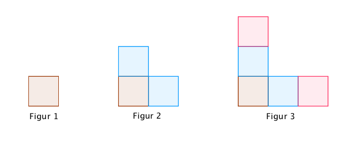
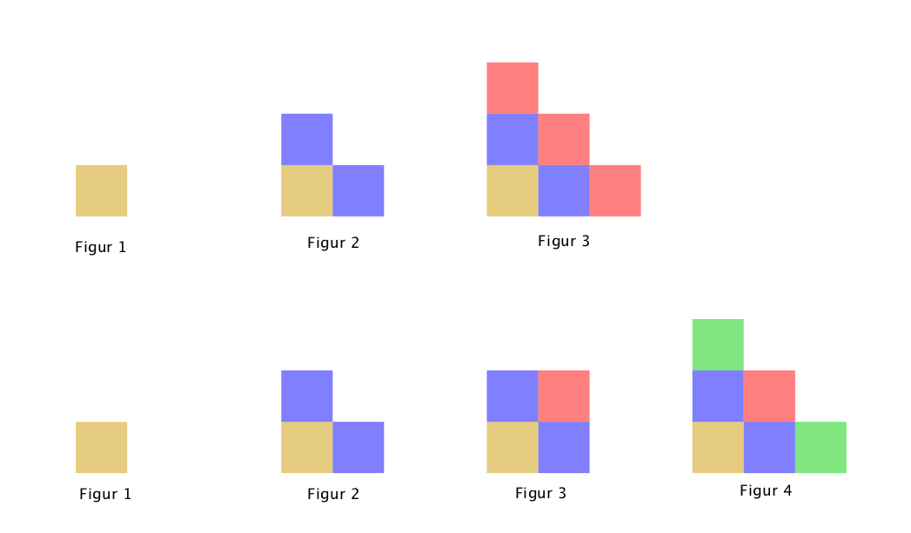
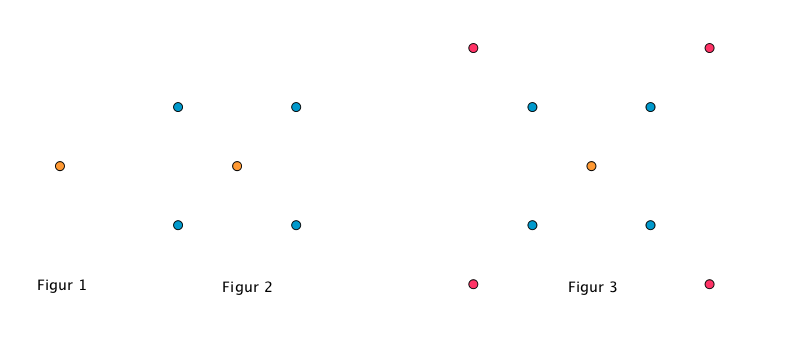
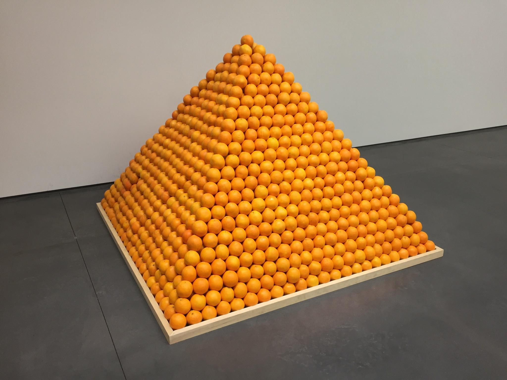
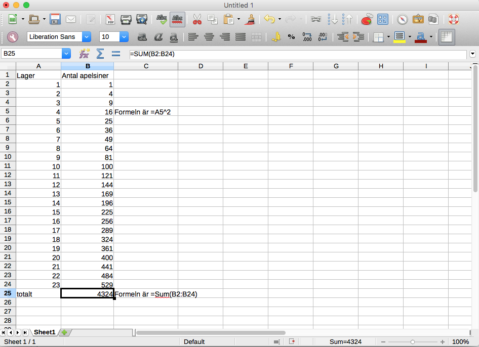
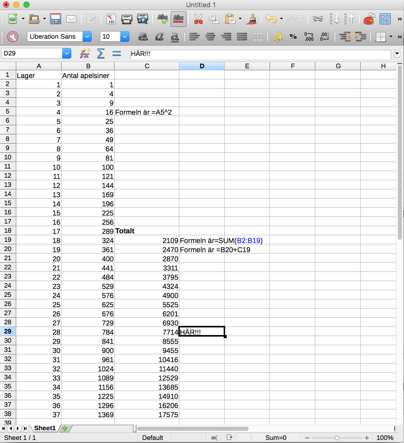
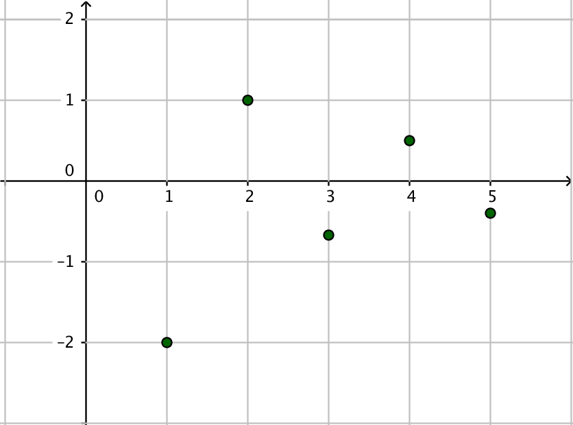
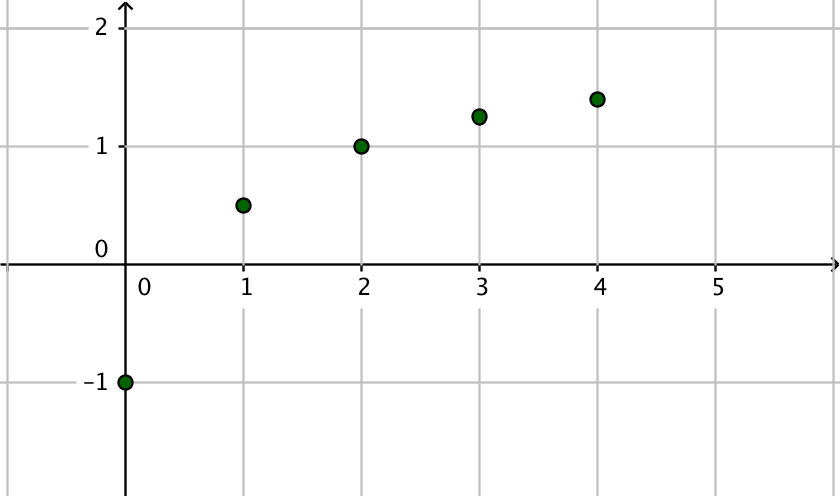
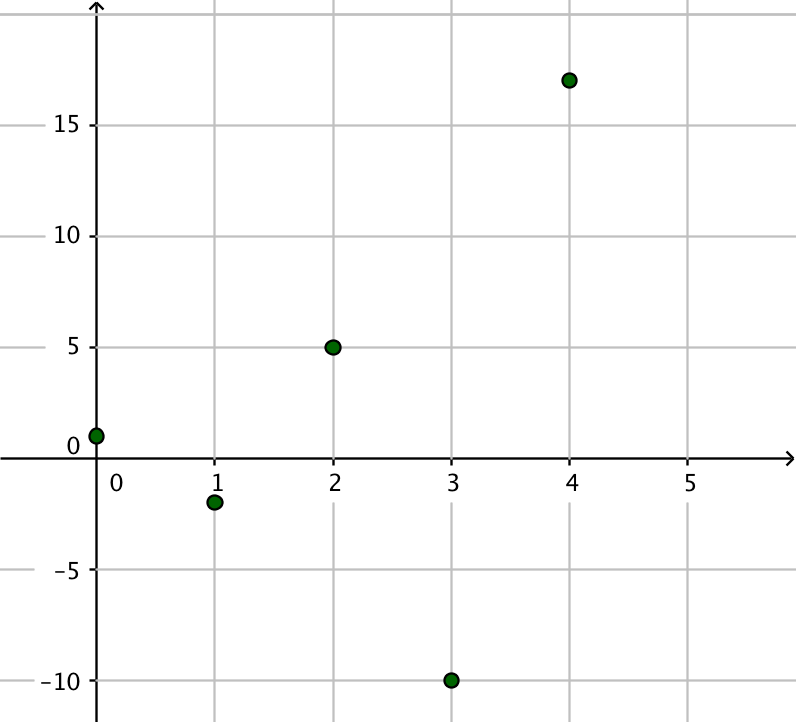

15. Talföjder
Tänk dig följande högar med apelsiner. Hur många apelsiner har vi i det fjärde lagret? Hur många har vi i det sjunde lagret?

Studera följande mönster. Hur många kvadrater består den 75 figuren av?

Lösning
I översta lagret har vi 1 apelsin. I andra lagret 3 st apelsiner. I följande lager har vi 6 st apelsiner.
Vi kan göra följande tabell
| Lager | Antal apelsiner |
|---|---|
| 1 | 1 |
| 2 | 3 = 1 + 2 |
| 3 | 6 = 3 + 3 |
| 4 | 6 + 4 = 10 |
| 5 | 10 + 5 = 15 |
| 6 | 15 + 6 = 21 |
| 7 | 21 + 7 = 28 |
Alltså 10 st och 28 st apelsiner.
Vi märker att antalet apelsiner i ett lager beror på antalet i föregående lager och hur mångte lagret är. Om vi vill ha flera lager så tar vi hjälp av ett kalkyleringsprogram som sköter räknandet för oss.
Det gör vi med rektanglarna.
För möstret gäller att första figuren består av 1 kvadrat, andra består av 3 stycken kvadrater och tredje av 5 stycken kvadrater.
Vi löser problemet med hjälp av LibreOffice.
VIDEO
Vill vi lösa problemet mera matematiskt så gör vi följande tabell:
| Figur | Antal kvadrater |
|---|---|
| 1 | 1 |
| 2 | 3 = 1 + 2 |
| 3 | 5 = 3 + 2 |
| 4 | 7 = 5 + 2 |
| allmänt | antalet i förra figuren + 2 |
Matematiskt kan vi uttrycka antalet som
\(\left\{ \begin{array}{rcl} a_1 &=& 1 \\ a_n &=& a_{n-1} +2 \end{array} \right.\)
Beteckningen \(a_1\) betyder första elementet. Beteckningen \(a_n\) betyder något element i talföljden och beteckningen \(a_{n-1}\) betyder föregående element.
Hur vi exakt löser dessa problem kommer i kapitlet om Rekursiva talföljder.
När vi har talföljder handlar det om att vi har ett mönster, en regel, som vi bygger vidare på för att bestämma det som kommer sedan i talföljden. Vi talar om att vi har en regel som bildar elementen som talföljden består av. Parallellt med att man talar om element för en talföljd så använder man sig även av benämningen termer.
Elementen eller termerna för talföljden \((a_n)\) betecknas som \(a_1, a_2, a_3, \ldots\). Då har vi beteckant det första elementet med en etta, det andra med en två osv. Det \(n\)-te elementet betecknas \(a_n\).
Diskutera och fundera: Hur kan man fortsätta följande mönster?

Det finns många olika sorter av talföljder. I introduktionen hade vi talföljder som strikt följder ett visst mönster. I diskussionsuppgiften ovan behöver mönstret inte vara lika strikt. De talföljder som vi arbetar med på gymnasiet inom matematiken är sådana talföljder som följer ett visst mönster.
Till nästa tar vi och börjar behandla talföljderna mera matematiskt.
Exempel 1 En talföljd definieras som \(a_n = 2n-1, n=1,2,3,\ldots\). Bestäm de 5 första elementen och element nummer 50.
Lösning
Exempel 2 En talföljd definieras som \(a_n= (\dfrac{1}{n})^2 , n\in \mathbf{ N}\). Rita upp talföljden på GeoGebra.
VIDEO
Kommandot Talföljd((1/n^2), n , 0, 6) och Talföljd((n,(1/n^2)), n , 0, 6)
Talföljder består av element (tal) som följer någon form av regel.
Elementen i en talföljd betecknas med \((a_n)\) som \(a_1, a_2, a_3, \ldots\).
Uppgifter
Ordna elementen för talföljden i rätt ordning då indexen för talföljden går från 1 till \(n\)
Välj bland följande element:
\(a_4\)\(a_{n-1}\)\(a_3\)\(a_2\)\(a_1\)\(a_n\)Element Antal i ordningen (1.) (2.) (3.) (4.) (5.) (6.) Element Antal i ordningen \(a_1\) (1.) \(a_2\) (2.) \(a_3\) (3.) \(a_4\) (4.) \(a_{n-1}\) (5.) \(a_n\) (6.) Ordna elementen för talföljden i rätt ordning då indexen för talföljden går från 1 till oändligheten.
Välj bland följande:
\(a_{n-2}\)\(a_{n-1}\)\(a_n\)\(a_1\)\(a_{n+1}\)\(a_{n+2}\)Element Antal i ordningen (1.) (2.) (3.) (4.) (5.) (6.) Element Antal i ordningen \(a_1\) (1.) \(a_{n-2}\) (2.) \(a_{n-1}\) (3.) \(a_n\) (4.) \(a_{n+1}\) (5.) \(a_{n+2}\) (6.) - Bestäm de 5 första elementen för talföljden som definieras av \(a_n=n-4\) då \(n=1,2,3,\ldots\) .
\( a_1 = -3, a_2 = -2, a_3 = -1, a_4 = 0, a_5 = 1 \).
- Bestäm följande elementen för talföljden som definieras av \(a_n=n^2-2n\) då \(n=0,1,2,\ldots\) .
\( a_0, a_1, a_2, a_5, a_{10} \) och \( a_{30} \).
\( a_0 = 0, a_1 = -1, a_2 = 0, a_5 = 15, a_{10} = 80, a_{30} = 840 \).
Bilda en talföljd av antalet prickar i de sex första figuerna för taljölden.

Figur 4 har 13 prickar, figur 5 har 17 prickar och figur 6 har 21 prickar.
- Hur många prickar består figur 10 av?
37 st
- Formulera en regel över hur man bestämmer antalet prickar i en figur.
I första figuren har vi en prick. Sedan adderar vi alltid till 4 st prickar för andra figuren, \(2\cdot 4 = 8\) prickar för tredje, \(3\cdot 4 = 12\) prickar för fjärde.
Alltså \(1+ (n-1)\cdot 4\) där \(n\) figurens ordning.
- Hur många prickar består figur 10 av?
Roelof Louw är en modern konstnär som arbetar med livsmedel som konstform. Följande konstverk består av apelsiner.

Arbeta på LibreOffice och bestäm totala antalet apelsiner i pyramiden.
Vi får något i stil med

4324 apelsiner.
- Hur många lager kan pyramiden bestå av om han har till förfogande 8000 apelsiner?
Något i stil med

28 lager.
- Hur många lager kan pyramiden bestå av om han har till förfogande 8000 apelsiner?
- Bestäm de 5 första elementen och det 10:e elementet i talföljden \(a_n=(-1)^n\cdot \dfrac{2}{n}\) då \(n=1,2,3,\ldots\). Gör talföljden konkret genom att rita upp de fem första elementen i ett koordinatsystem på GeoGebra.
\(a_1=-2\)
\(a_2=1\)
\(a_3=-\dfrac{2}{3}\)
\(a_4=\dfrac{1}{2}\)
\(a_5=-\dfrac{2}{5}\)
\(a_10=\dfrac{1}{5}\)

- Bestäm de 5 första elementen och det 25:e elementet i talföljden \(b_n = \dfrac{2n-1}{n+1}\) då \(n=0,1,2,\ldots\). Gör talföljden konkret genom att rita upp de fem första elementen i ett koordinatsystem på GeoGebra.
\(a_0=-1\)
\(a_1=\dfrac{1}{2}\)
\(a_2=1\)
\(a_3=\dfrac{5}{4}\)
\(a_4=-\dfrac{7}{5}\)
\(a_{24}=\dfrac{47}{25}\)

- Bestäm de 5 första elementen och det 30:e elementet i talföljden \(a_n = (-1)^n \cdot (2+n^2)\) då \(n=0,1,2,\ldots\). Gör talföljden konkret genom att rita upp de fem första elementen i ett koordinatsystem på GeoGebra.
\(a_0=1\)
\(a_1=-2\)
\(a_2=5\)
\(a_3=-10\)
\(a_4=-17\)
\(a_29=-843\)

- Bestäm uttrycket för talföljden som består av elementen \(0,2,4,6,\ldots\).
Dela upp elementen i mindre beståndsdelar och undersök vad du hittar.
Vi märker att \(0=2\cdot 0\), \(2=2\cdot 1\), \(4=2\cdot 2\) och \(6=2\cdot 3\). Vi kan uttrycka talföljden som \(2n\) där \(n=0,1,2,3 \cdots\).
- Bestäm uttrycket för talföljden som består av elementen \(1,3,5,7,\ldots\).
Dela upp elementen i mindre beståndsdelar och undersök vad du hittar.
Vi märker att \(1=2\cdot 1-1\), \(3=2\cdot 2-1\), \(5=2\cdot 2-1\) och \(7=2\cdot 3-1\). Vi kan uttrycka talföljden som \(2n-1\) där \(n=1,2,3 \ldots\) eller som \(2n+1\) där \(n=0,1,2,3 \ldots\).
Tänk dig följande problem med kaninpar.
- Det finns endast ett par nyfödda kaniner första månaden.
- Nyfödda kaniner blir könsmogna från månad två och framåt.
- Det uppstår inga genetiska problem på grund av inavel.
- Varje månad föds en unge per könsmogen kanin.
- Ingen av kaninerna dör.
Hur många kaninpar har vi efter 12 månader?
144 par kaniner
Den talföljd som vi får ser ut som

Månad Antal kaninpar 1 1 2 1 3 2 4 3 5 5 6 8 7 13 8 21 9 34 10 55 11 89 12 144 Alltså 144 par kaniner.
Talföljden ser ut som 1, 1, 2, 3, 5, 8, 13, 21, ... där följande element, siffra, är beroende av föregående element. Eftersom elementerna är beroende av varandra talar vi om en rekursivt definierad talföljd. Talföljden går under namnet Fibonnacis talföljd. Tillämpningar av talföljden hittar man i naturen.